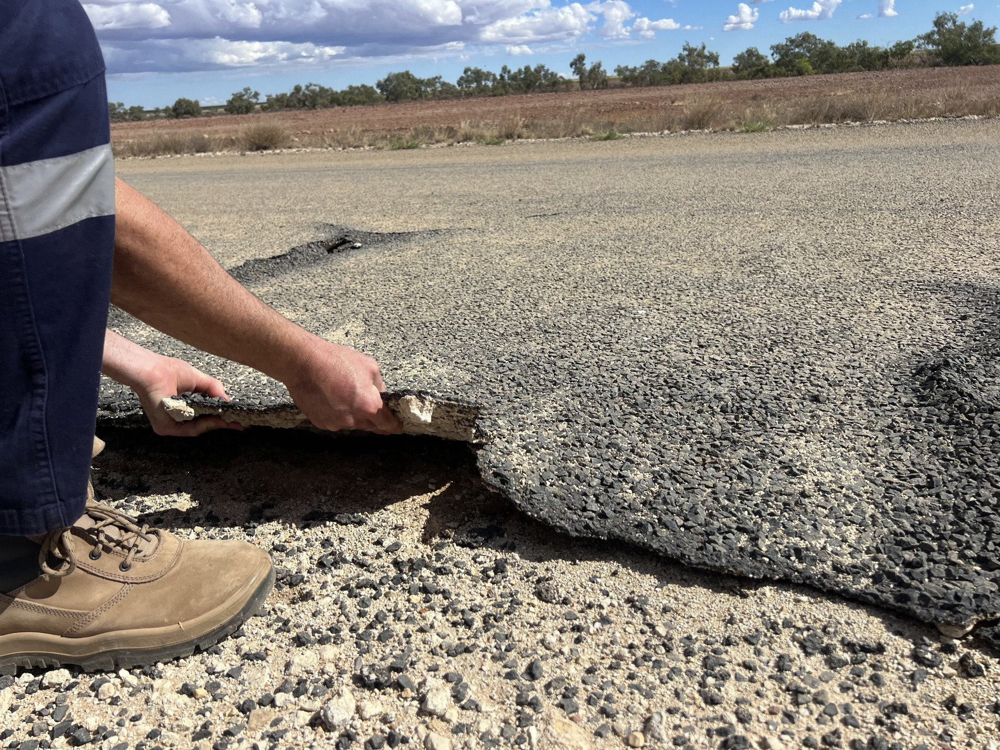
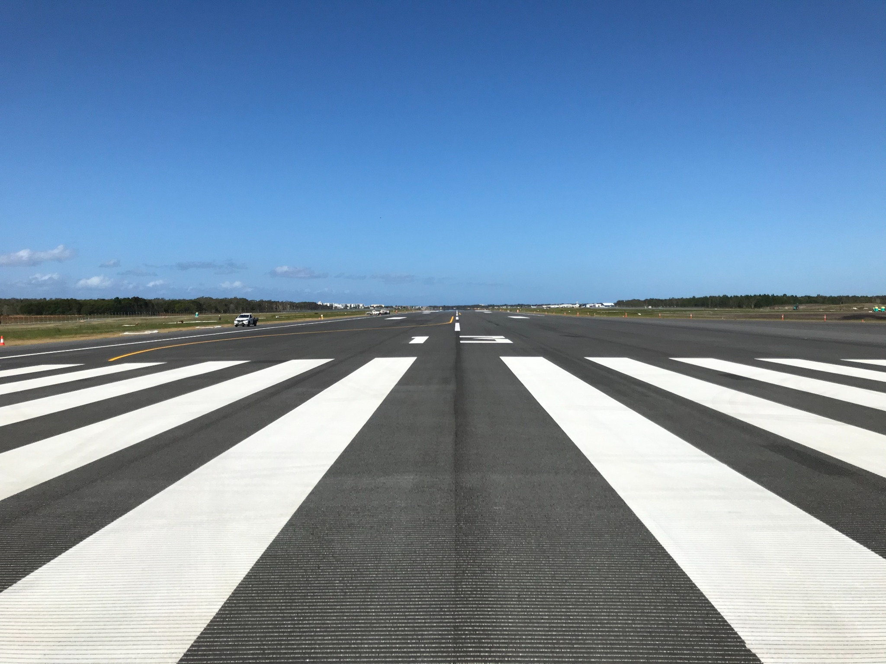
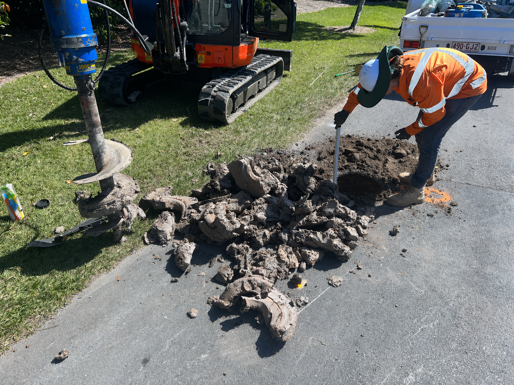
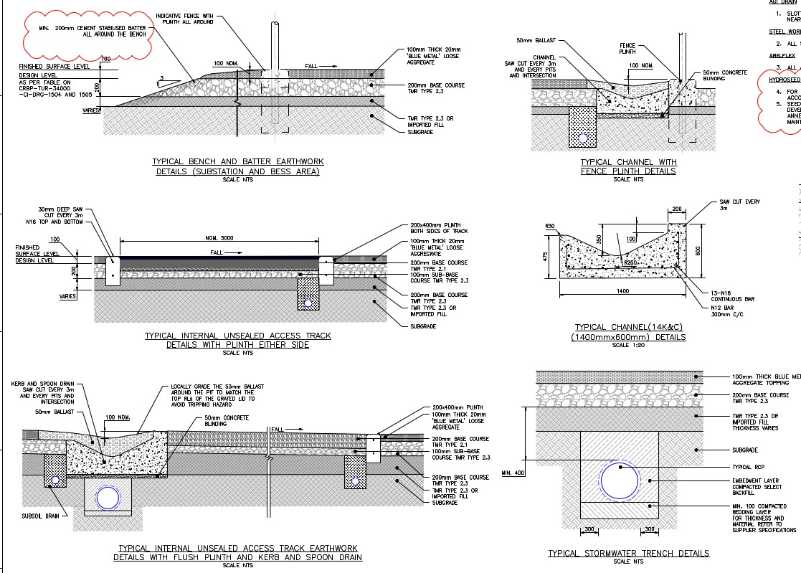
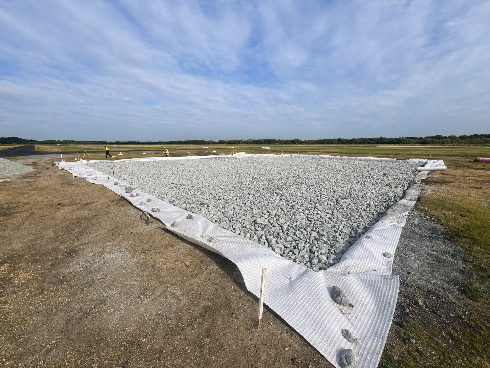
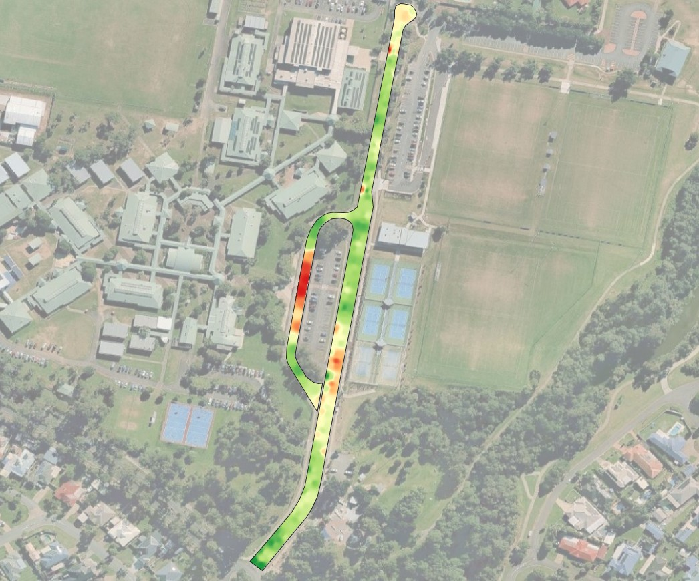
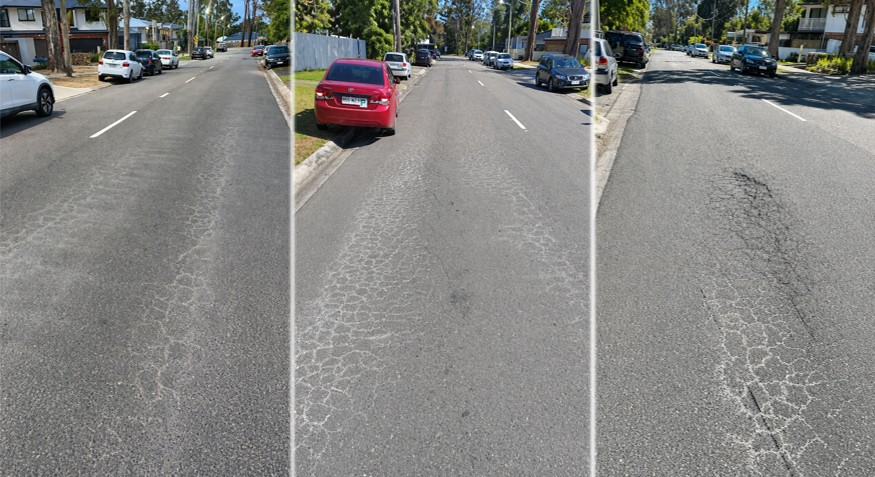
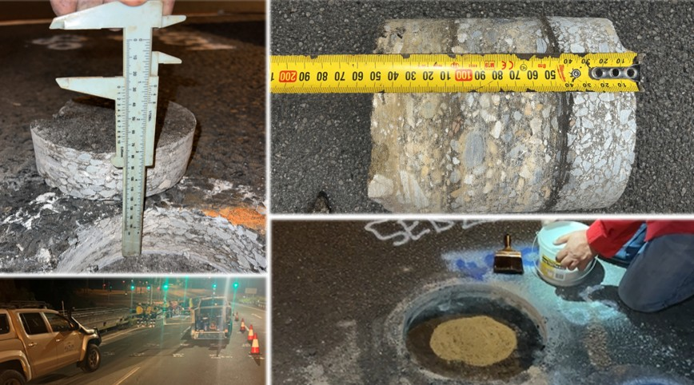
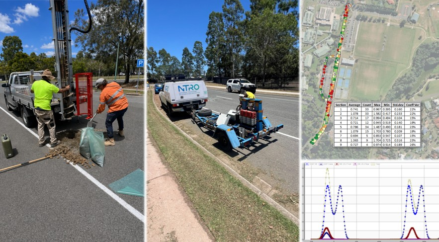
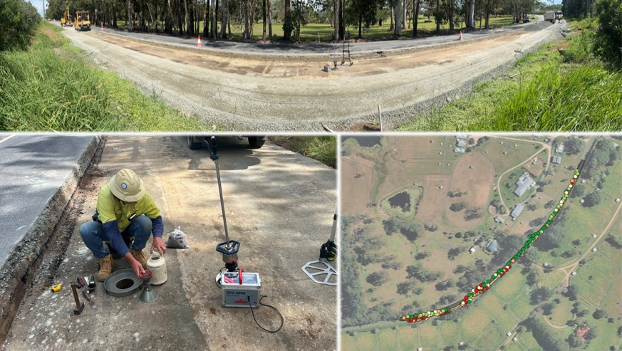

Pavement Investigations & Assessment
Project-level investigations combining visual condition, geotechnical testing, coring, FWD interpretation and engineering assessment to define pavement structure, materials and failure mechanisms.

Pavement engineering, FWD testing and rehabilitation design for road networks and airport infrastructure across Australia.
Specialist pavement investigations, FWD-based structural assessment, rehabilitation design and construction verification.
ALTUS Engineering provides pavement engineering services across road networks and airport infrastructure, with a focus on data-driven assessment and practical design outcomes. Work is typically undertaken for local government and regional clients, where the requirement is to define pavement condition, quantify structural capacity, and develop cost-effective rehabilitation strategies that can be delivered within funding and programme constraints.
Investigations and designs are underpinned by field data (visual, geotechnical, GPR and FWD) and mechanistic assessment, ensuring recommendations are evidence-based and directly implementable. Outcomes are structured to support clear decision-making, including prioritisation of works, risk identification and defensible design inputs.

Project-level investigations combining visual condition, geotechnical testing, coring, FWD interpretation and engineering assessment to define pavement structure, materials and failure mechanisms.

Subsurface investigations and laboratory testing to assess design parameters - CBR, moisture sensitivity, material behaviour, ASS and constructability risks.

Rehabilitation design supported by mechanistic analysis, treatment optioneering and practical staging considerations for roads, aprons, taxiways and runways.

Airport pavement investigations, Technical ACR/PCR assessments, rehabilitation design, strength assessment support and technically defensible solutions for international, regional and remote aerodrome environments.

FWD testing and structural assessment used to support pavement rehabilitation design, overlay design, remaining life assessment and treatment prioritisation for roads and airport pavements.

Construction-phase pavement oversight, hold point inspections, QA including LWD-informed support condition checks and certification of pavements.

ALTUS was engaged to investigate premature failure of a recently rehabilitated pavement that exhibited rapid deterioration shortly after construction. Distress included widespread fatigue cracking, rutting and localised failures, indicating underlying structural inadequacy rather than surface-related issues.
The failure was attributed to overestimation of pavement material performance, inadequate consideration of variability and a mismatch between investigation data and actual in-situ conditions. A revised rehabilitation strategy was developed adopting more conservative design inputs and targeted reconstruction of weak areas.

ALTUS provided RPEQ supervision for a bridge deck wearing surface (DWS) investigation in accordance with DTMR requirements, including review and oversight of the approved Deck Investigation Plan (DIP).
The works comprised GPR scanning, targeted coring, torsion bond testing and sand patch texture testing to assess asphalt thickness, bond condition and surface characteristics. All activities were undertaken under direct RPEQ oversight with verification against site observations and testing protocols for the planning and design of the wearing surface rehabilitation.

ALTUS completed a pavement investigation comprised of FWD testing, geotechnical drilling, laboratory material testing, visual condition assessment and traffic data review to inform rehabilitation design.
The investigation defined pavement composition and material properties through borehole logging and laboratory testing, while DCP and FWD data were used to assess in-situ structural performance. FWD results were used to delineate weak sections and variability along the alignment, allowing the rehabilitation to be targeted and optimised in terms of treatment type and extent.

ALTUS Engineering was engaged to provide RPEQ construction certification including QA testing.
Due to the road’s operational importance and the requirement to maintain traffic during construction, rapid QA testing and RPEQ certification were critical. ALTUS undertook in-situ density testing in conjunction with Light Weight Deflectometer (LWD) testing to verify compaction and support conditions in near real time.
This approach enabled immediate assessment of the subgrade preparation, allowing sections to be profiled, tested and, where required, design adjustments made within approximately one hour. Works could then proceed to backfilling and compaction of gravels, maintaining trafficability with minimal disruption.
About
ALTUS Engineering is led by Trent McDonald, a pavement engineering professional with experience across road and airport infrastructure investigations, structural assessment and rehabilitation design. His experience includes delivery of data-driven pavement investigations incorporating FWD, geotechnical testing and material characterisation, along with development of practical rehabilitation strategies using Austroads, state road authority and FAA-based design methodologies.
Trent has worked extensively with local government and airport clients, providing input into pavement evaluation, ACR/PCR assessments, construction verification and RPEQ certification. This includes both investigation and design phases, as well as construction-stage support to ensure outcomes align with design intent and specification requirements.
ALTUS Engineering is positioned to provide specialist pavement engineering support with a conservative, technically grounded approach. Services are focused on defining pavement condition and performance using measured data, and translating this into clear, defensible and implementable outcomes suited to councils, airport operators, asset owners and infrastructure delivery teams.
Enquiry